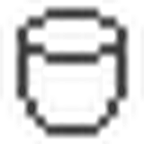

Create: Artificial Meat
用机器「培养」出肉，不必再养一大群动物。
这是什么
把肉类生产搬进工厂：原料经过几道加工变成各种肉块与肉制品。
规模：7 个物品、16 个方块、10 条配方；模组没有中文语言文件，名字按英文意译。
物品与配方
beefmothercellbeefmothercell
celllaboratorycelllaboratory
chickenmothercellchickenmothercell
liquid nutrientsliquid_nutrients
liquid nutrients bucketliquid_nutrients_bucket
muttonmothercellmuttonmothercell
porkchopmothercellporkchopmothercell
rabbitmothercellrabbitmothercell